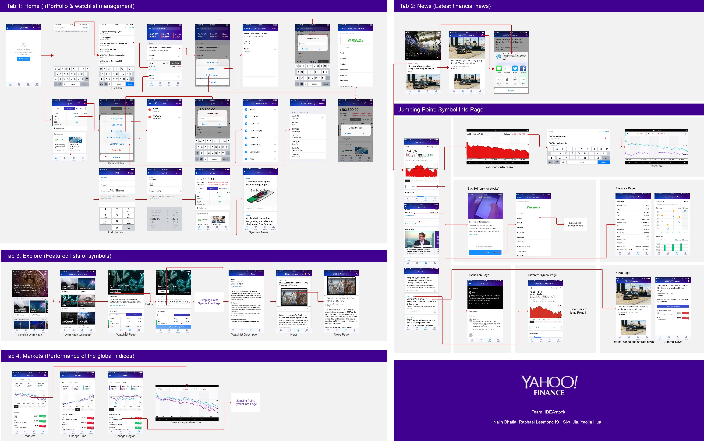
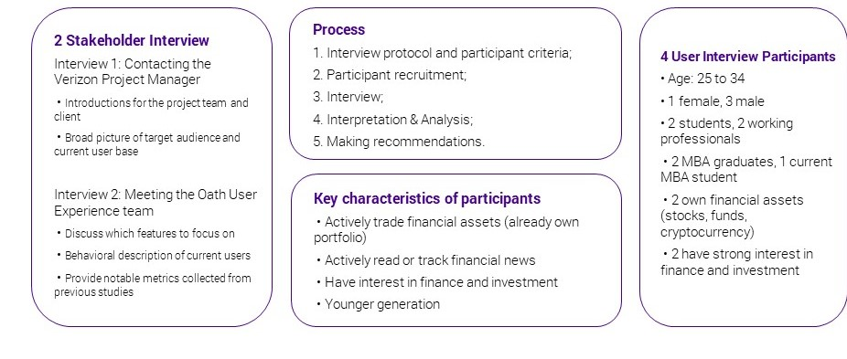
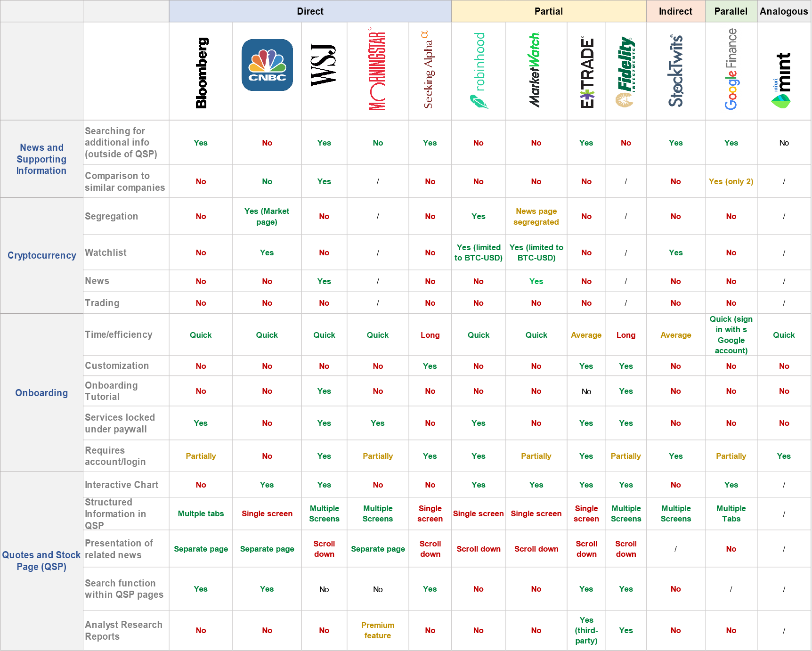
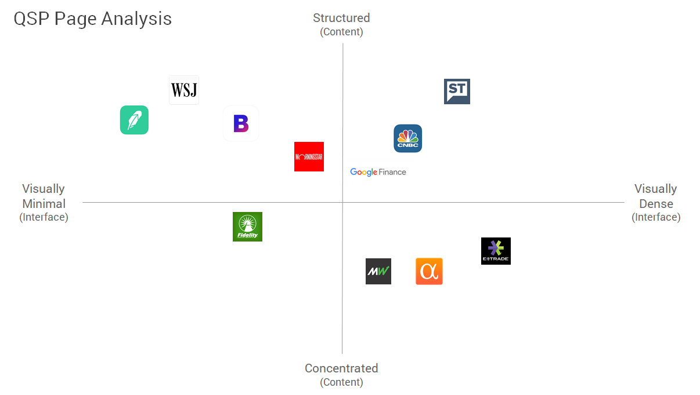

Interaction Map
User Interviews of the following staff members were conducted in accordance with their respective roles as shown in the figure below. Organizational fit of the interviewees was analyzed before to understand the workflow between the different members. A comprehensive interview protocol was developed based on our background research and problem definition.
Interviews
To define the scope of the project and understand the research goals, we held two meetings with the stakeholders from Verizon and Oath (a subsidiary of Verizon) respectively. Based on the insights from the stakeholder interviews, we prepared an interview protocol and recruited 4 participants based on their demographics and involvement with financial activity. The visual below gives an overview of our methods.
The full interview report can be found here.
Interviews
The interview analysis included recording interviews, converting audio recordings into transcripts, and building an affinity wall to organize data and uncover insights. We extracted over 100 pieces of notes from the interview transcripts and turned them into a series of discrete affinity notes. Then we grouped the notes into clusters according to similar ideas or themes, which made up an affinity wall (shown below).

Comparative Evaluation
To conduct this comparative analysis, our first step was to set up a bunch of criteria to select comparative products. We had taken several factors into consideration including the findings from previous interviews, suggestions from the user research team of Yahoo! Finance, app rankings in both Apple Store and Google Play, as well as user reviews. To further filter and refine our lists, we sort the products into five categories according to Mark Newman’s taxonomy . Following is the comparative evaluation matrix:
Quote Summary Page (QSP)
The Quote Summary Page (QSP) is a common element present in all of the competitor applications, and is also the most crucial element in a financial application. We examined and compared all the QSP pages, and developed a 2x2 space chart to describe the quote stock page based on two dimensions - information architecture and visual design:
Survey
In progress.